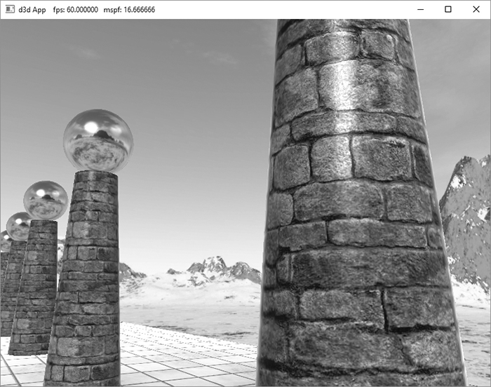
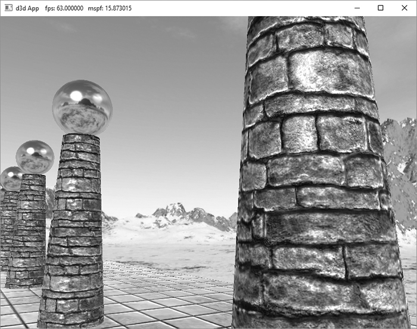
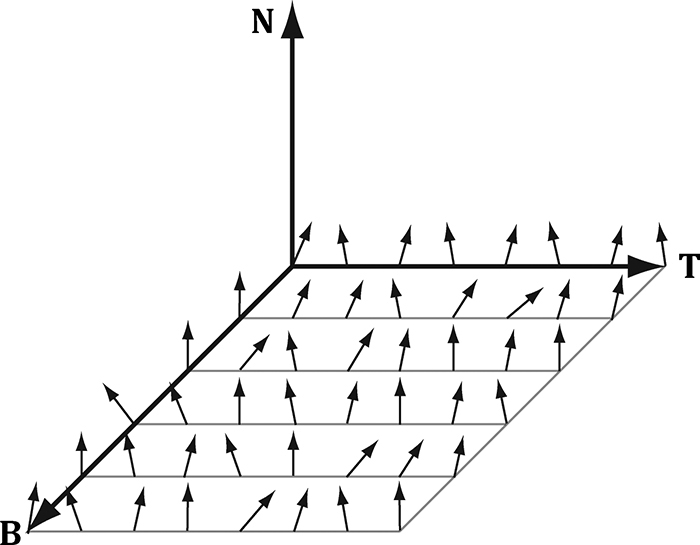
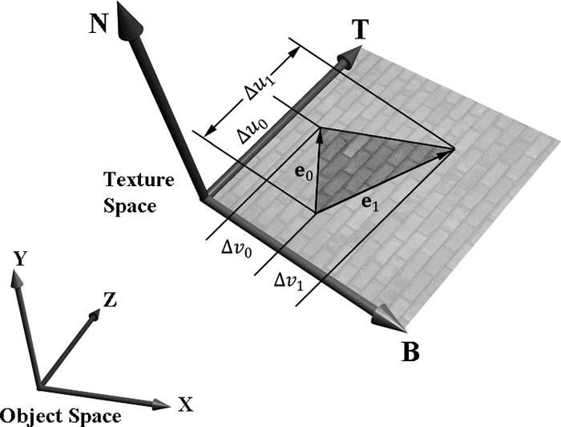
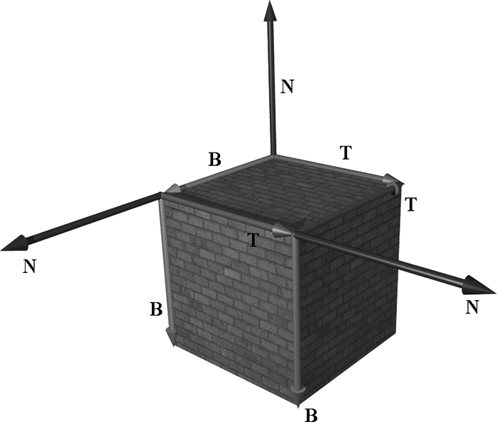
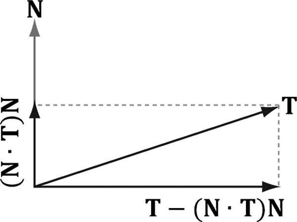
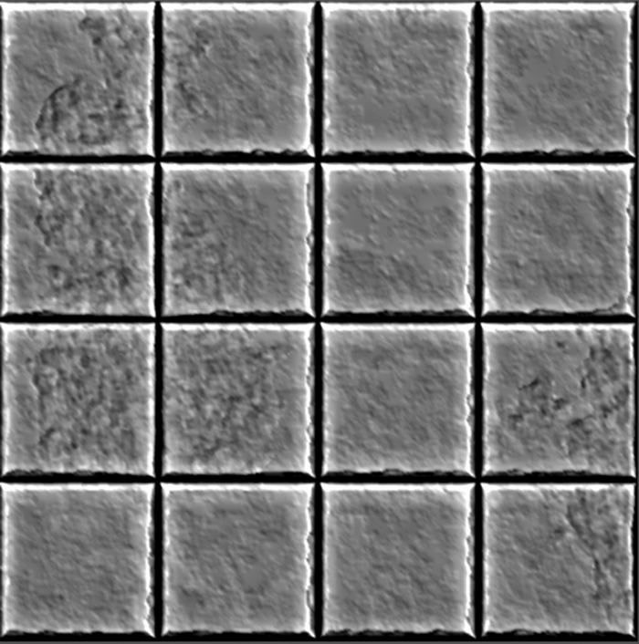
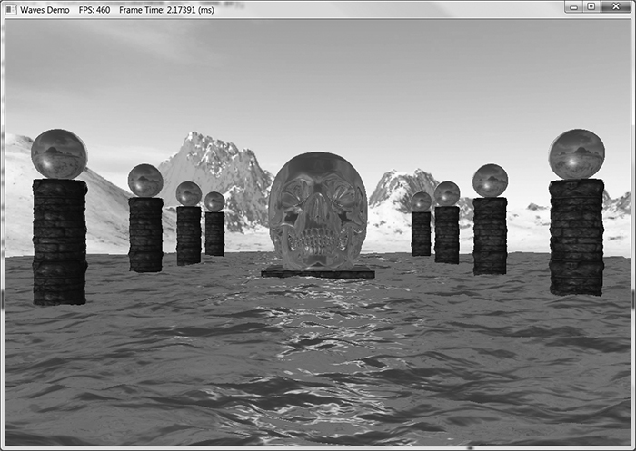
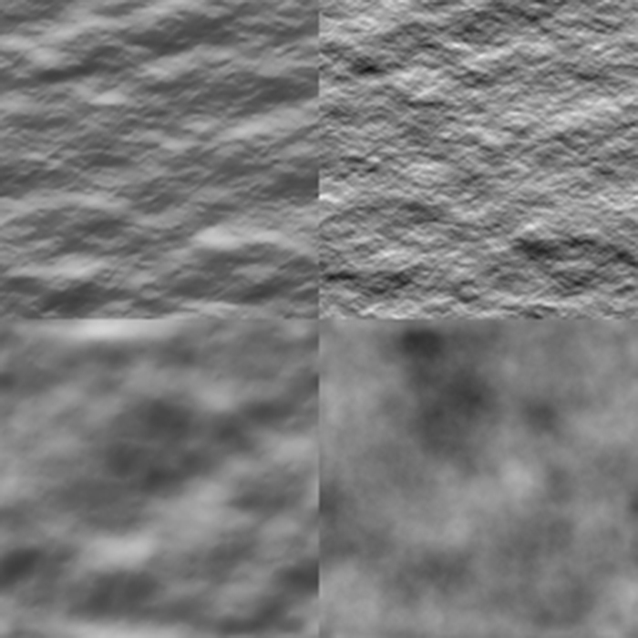

本章学习目标（Objectives）
- 理解"低模 + 法线贴图 = 高模观感"的思想；
- 掌握切线空间（TBN）与法线图的关系；
- 理解顶点切线向量的计算（握手算法）与空间变换；
- 实现法线贴图着色器。
19.1 动机（Motivation）
砖墙真的要建出每块砖的几何吗？不用——凹凸感主要来自光照变化。把"细节表面的法线"存进贴图，逐像素扰动光照计算的法线，视觉上出现凹凸（书中光滑球 vs 凹凸球的对比图非常直观），三角形数却不变。这是法线贴图（bump mapping 的现代实现）。
19.2 法线图（Normal Maps）
法线图是一张 RGB 贴图：R=x、G=y、B=z（各通道 [0,255] 映射到 [−1,1]：n = 2·pixel/255 − 1），存的是"扰动后的法线方向"。这些法线是相对切线空间定义的。
19.3 纹理/切线空间（Texture/Tangent Space）
切线空间：以贴图 uv 为坐标轴的局部坐标系——T（tangent，u 方向）、B（bitangent，v 方向）、N（表面法线）。法线图里的法线在 TBN 中表达；同一个盒子六个面各有一套 TBN（书中图示盒子每面不同）。之所以用这个空间：贴图是"共享资产"，与具体物体摆放无关。
19.4 顶点切线空间（Vertex Tangent Space）
对每个三角形求 T：三角形两点差 Δp₀、Δp₁ 对应贴图差 Δ(u₀,v₀)、Δ(u₁,v₁)，解 2×2 线性方程组得 T 与 B；再对 T 做格拉姆-施密特正交化（扣掉 N 分量，图中 T−proj_N(T)）。逐顶点切线 = 共享顶点的面切线平均（与顶点法线同理），存进顶点结构（BINORMAL 可在着色器里 cross 算出，省一个属性）。
// 顶点结构新增切线 struct Vertex { float3 Pos; float3 Normal; float2 Tex; float3 Tangent; };
19.5 切线空间 ↔ 物体空间（Transforming Between Spaces）
两种做法：① 把法线图里的法线由 TBN 变换到世界空间（TBN 矩阵 = [T B N] 各行由世界矩阵变换）；② 把光向量 L、视线 V 变到切线空间再点积——效果等价，选实现方便的。
19.6 法线贴图着色器代码（Normal Mapping Shader Code）
// PS 里（简化自书中代码） float3 normalT = 2.0f * gNormalMap.Sample(gsamAnisotropicWrap, pin.Tex).rgb - 1.0f; float3 N = normalize(pin.NormalW); // 世界法线 float3 T = normalize(pin.TangentW - dot(pin.TangentW, N) * N); // 正交化 float3 B = cross(N, T); // 副切线 float3x3 TBN = float3x3(T, B, N); float3 bumpedN = normalize(mul(normalT, TBN)); // 扰动后的世界法线 // 用 bumpedN 代替 N 参与光照即可
demo：砖墙地面 + 地砖墙面，贴图还带 alpha 通道控制光泽度（"这个位置光滑/粗糙"）。法线图通常与漫反射图配套制作（高模烘焙）。
本章小结
- 法线图存切线空间法线，扰动逐像素光照——低模高质感。
- TBN 三轴：T=u 方向、B=v 方向、N=法线；顶点 T 由 Δp/Δuv 方程解出并正交化。
- PS：n = 2·tex−1 → mul(n, TBN) → 世界空间法线 → 正常光照。
- alpha 通道还能存光泽度/高度等第二信息。
🖼️ 原书插图（9 张，点击展开）








